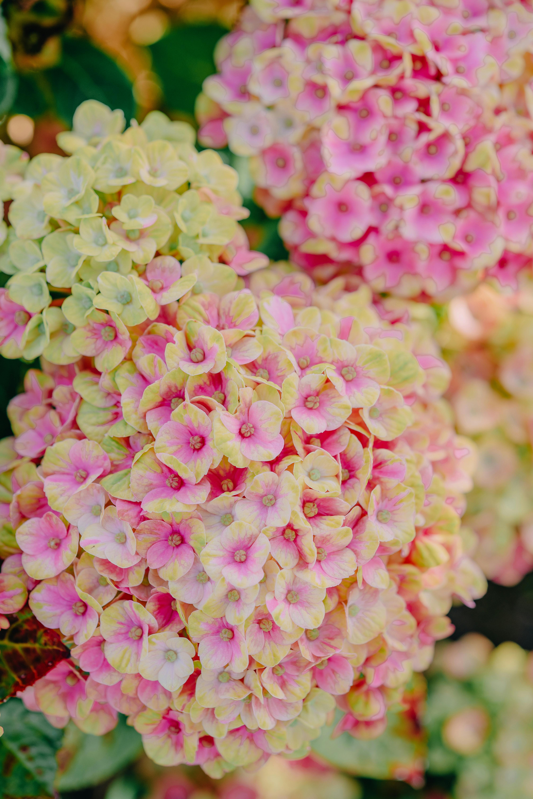
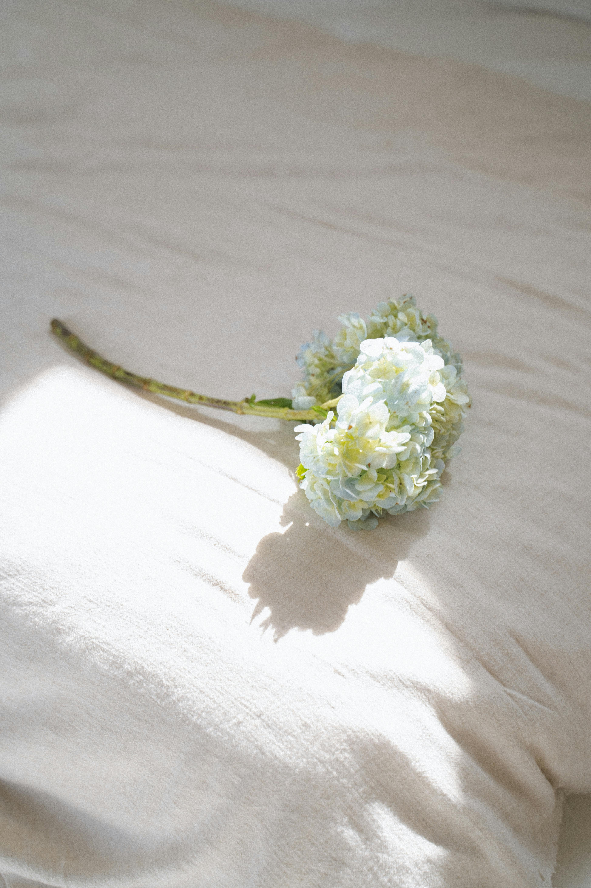
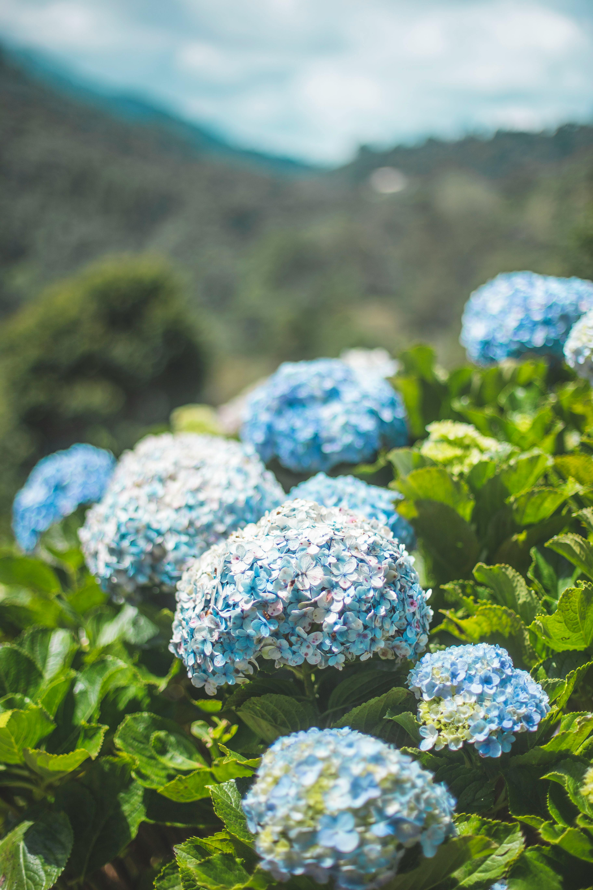

Hydrangea
Purity, Grace, Abundance
Where Can You Find Hydrangeas?
Hydrangeas are popular flowering plants native to a variety of regions, primarily in Asia and the Americas. They are especially abundant in East Asia, with Japan being one of the main sources of many hydrangea species. Japanese gardeners and botanists have cultivated and celebrated these flowers for centuries, and hydrangeas play a significant role in traditional Japanese gardens and art. Other species are also native to the Himalayan region, China, Korea, and various parts of the Americas, from the southeastern United States down to the mountainous regions of South America.
Hydrangeas typically thrive in temperate climates, with the most successful growth occurring in areas with mild summers, cool winters, and high humidity. They favor partial shade, although some species, like Hydrangea paniculata, can withstand full sun as long as the soil is kept consistently moist. The plant’s large, lush leaves and clusters of vibrant flowers make it a popular choice for gardens and landscapes, adding color and texture to shaded or partially shaded areas. Hydrangeas are well-suited for acidic to neutral soil, which allows them to change their flower color in some species based on the soil's pH level; acidic soil often produces blue flowers, while alkaline soil results in pink blooms.
Gardeners worldwide have embraced hydrangeas, not only for their beauty but also for their versatility in various climates and soils. Some of the most popular varieties, like Hydrangea macrophylla, or “bigleaf hydrangea,” are known for their stunning, mophead-shaped blooms that change color. In contrast, the Oakleaf hydrangea (Hydrangea quercifolia) is prized for its unique leaf shape and resilience in different weather conditions. Hydrangeas have also become popular in regions of Europe and North America, where gardeners have developed new varieties and hybrids to withstand local climates and add diversity to garden spaces. Their adaptability, showy flowers, and lush foliage continue to make hydrangeas a favorite for gardeners and landscapers around the world.
What Are Hydrangeas Used For?
Hydrangeas are most commonly appreciated for their ornamental value, particularly in landscaping. The vibrant, large blooms of hydrangeas make them an ideal choice for gardeners looking to add a splash of color and texture to their outdoor spaces. These plants thrive in shaded or partially shaded areas, making them perfect for spots in the garden that may not get full sun. With their broad range of colors—ranging from blue and purple to pink and white—hydrangeas can be planted in groups to create stunning displays. One of the unique features of hydrangeas is their ability to change flower color depending on the pH of the soil, which provides even more flexibility in creating visually striking garden designs. Their lush foliage and dramatic flower heads make them popular choices for both formal gardens and more relaxed, cottage-style landscapes.

In addition to their role in landscaping, hydrangeas are widely used in floral arrangements. The large, showy blooms are a favorite for weddings, events, and other celebrations. Hydrangeas are often featured in bridal bouquets and table centerpieces, where their full flower heads add volume and a romantic feel. They are also popular in dried arrangements, as they retain their color and shape well after being dried, making them perfect for creating wreaths, dried bouquets, or decorative pieces for the home. Their ability to hold their form and color makes them particularly useful for long-lasting floral displays, whether fresh or dried.
Beyond their aesthetic uses, hydrangeas have been utilized in traditional medicine, though these uses are more historical and less widespread today. In some cultures, particularly in Asia and North America, the roots of certain hydrangea species, like Hydrangea arborescens, were used in herbal remedies for their purported medicinal properties. Some believed the plant could help with urinary tract issues, kidney stones, and inflammation. However, modern scientific research on the medicinal uses of hydrangeas is limited, and caution is advised when considering herbal remedies. As with many plants used in traditional medicine, it's essential to consult with a healthcare professional before using hydrangeas for health purposes. In summary, hydrangeas are versatile plants appreciated not only for their beauty in gardens and floral arrangements but also for their historical medicinal uses. Their striking blooms and adaptability to different climates make them a lasting favorite in gardens around the world.
A Flower Poem
Your flowers are so Beautiful and so bright and They smile in the morning So light and its a beautiful sight And bringing joy to your place And I'll cherish your colourful Flowers and each and every one For in their presence my Heart is forever won.
— David P. Carroll